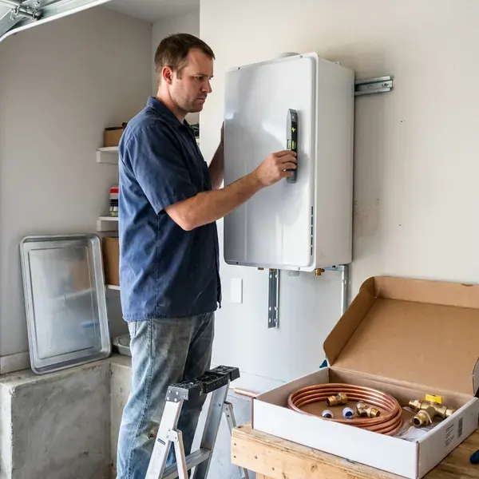

Electric Tankless Water Heater Installation in Hutchinson, KS
Upgrade to endless hot water with an electric tankless water heater installation in Hutchinson, KS. Our experienced plumbers ensure a seamless setup for your home.
- No Venting Required
- Energy Efficient
- Quick, Reliable Installation
- Guaranteed Work

Your Go-To for Electric Tankless Water Heaters in Hutchinson, KS.
We size each unit by flow rate, temperature rise and electrical capacity.
Reliable Electric Tankless Water Heater Installation for Hutchinson, KS Homes
KRV Plumbing reviews your electrical panel, flow needs and incoming water temperature before recommending a unit. We work alongside licensed electricians when added circuits or panel upgrades are needed.
Our expertise includes:
- Panel capacity review and coordination for dedicated circuits
- Ensuring all local plumbing and electrical codes are met.
- Precise electrical load assessment for your home.

Additional Plumbing Installation Services in Hutchinson, KS
We install water heaters, pumps, lines, and fixtures across Hutchinson, KS with precision workmanship that meets every local code.


Customers
Why Choose KRV Plumbing for Electric Tankless Water Heater Installation in Hutchinson, KS?
Our team ensures every installation meets the highest standards for performance and safety, providing you with a dependable hot water system for years to come.
- Endless Hot Water, Never run out of hot water again, even with multiple showers or appliances running simultaneously.
- Space Saving, These compact units mount on a wall, freeing up valuable floor space in your garage or utility closet.
- Long Lifespan, Electric tankless heaters usually last much longer than conventional tank-style water heaters, offering greater long-term value.
Citywide Coverage
From all-electric homes to additions and guest suites, we serve every part of Hutchinson. We plan installs that keep connections accessible for future service.
Experienced Team
Our plumbers have installed electric tankless units for whole homes and individual fixtures. They understand flow sizing and how temperature rise affects performance.
Safety-First Approach
When installing an electric tankless water heater, proper electrical connections and circuit protection are essential. KRV Plumbing adheres to the strictest safety standards and local building codes for every installation in Hutchinson, providing you with peace of mind.
Trusted Certified Hutchinson Plumbing Services Professionals
At KRV Plumbing, we take pride in providing licensed, certified plumbing services throughout Hutchinson, KS. Backed by recognized industry credentials, our experienced plumbers combine technical skill with genuine customer care. Whether it is repair, installation, or maintenance, we follow strict safety and quality standards to deliver lasting results you can trust.
Call Us Now PHCC Plumbing Contractor Recognition
PHCC Plumbing Contractor Recognition Better Business Bureau (BBB) Accreditation
Better Business Bureau (BBB) Accreditation Angi Certified Pro
Angi Certified Pro ISO 9001 Quality Management Certification
ISO 9001 Quality Management CertificationAdvanced Electric Tankless Water Heater Installation Services in Hutchinson, KS
Whole-Home Electric Tankless Systems in Hutchinson, KS
For complete hot water coverage throughout your Hutchinson, KS home, a whole-home electric tankless system is an smart choice. We size the unit appropriately based on your fixture count and simultaneous hot water usage, ensuring consistent temperatures at every tap. This typically involves a single, larger unit or a series of smaller point-of-use heaters for optimal performance.

Electric Tankless Water Heater Upgrades in Hutchinson, KS
Upgrading from a traditional tank water heater to an electric tankless model is a popular choice for Kansas residents looking for efficiency. We manage the entire conversion process, including safe removal and disposal of your old tank. Our plumbers make sure all new electrical lines and plumbing connections are correctly installed, meeting all local codes. This upgrade often frees up valuable space and can improve your home's energy performance.
Ecosmart Electric Tankless Water Heater Installation in Hutchinson, KS
Ecosmart electric tankless water heaters are popular for their smart technology and energy-saving features. KRV Plumbing provides professional installation of Ecosmart units across Hutchinson, KS. We confirm your home's electrical system can support the unit's requirements, ensuring safe and efficient operation. Our installation process makes sure that you'll get the maximum performance and energy efficiency out of your new Ecosmart water heater, helping you save on utility bills year-round.
Cost Comparison: Electric Tankless vs. Traditional in Hutchinson, KS
Many Hutchinson, KS homeowners wonder about the long-term costs of electric tankless versus traditional tank water heaters. While the initial installation cost for an electric tankless unit can be higher due to electrical upgrades, the energy savings over its lifespan often make it a more cost-effective choice. Our team can provide a detailed breakdown of potential savings, helping you make an informed decision for your budget and hot water needs.
Residential Electric Tankless Heater Installation in Hutchinson
For homeowners in Hutchinson, we provide custom electric tankless water heater installation services. We assess your household's hot water demand, existing electrical capacity and main water line size to recommend the right unit. Our team handles everything from permit acquisition to final testing, ensuring a hassle-free upgrade to endless hot water. Kansas sees hot summers, cold winters, and fast temperature swings, which put constant stress on pipes, fittings, and water heaters.
Residential Electric Tankless Water Heater Installation in Hutchinson
For homeowners in Hutchinson, an electric tankless water heater means a continuous supply of hot water for bathing, washing dishes and laundry. We help you choose the right size unit based on your household's peak hot water demand, ensuring you never run cold. Our service includes a full assessment of your current electrical panel capacity, as these units require dedicated high-amperage circuits. We work with leading brands like Rheem, Ecosmart and Stiebel Eltron to provide dependable solutions matched to your home's needs.
Emergency Electric Tankless Water Heater Replacement in Hutchinson, KS
If your old water heater suddenly fails and you need a fast replacement, KRV Plumbing offers emergency electric tankless water heater installation services in Hutchinson, KS. We understand the urgency of restoring hot water to your home or business. Our team can promptly assess your needs, recommend a good electric tankless unit and perform the installation with minimal disruption. We focus on rapid response to get your hot water flowing again.

Rheem Electric Tankless Water Heater Installation in Hutchinson
Rheem is a trusted name in water heating, offering a range of high-performance electric tankless models. KRV Plumbing is experienced with installing many Rheem units, known for their durability and efficiency. We make sure your Rheem unit is perfectly sized and correctly wired to provide optimal hot water delivery. Our team handles everything from securing the unit to the wall to making sure all electrical and water lines are properly connected and leak-free.
Electric Tankless Water Heater Installation Near Me in Hutchinson, KS
Looking for 'electric tankless water heater installation near me' in Hutchinson, KS? KRV Plumbing is your local expert, providing prompt and reliable service throughout the area. Our local presence means quicker response times and a better understanding of the plumbing needs of Kansas homes.
When you need an electric tankless water heater installed, you want a trusted local company. KRV Plumbing is dedicated to serving our Hutchinson neighbors with top-quality workmanship and exceptional customer service, making sure your hot water needs are met efficiently.
KRV Plumbing at a Glance
- Fully licensed plumbing team covering Hutchinson, KS
- Same-day appointments and 24/7 emergency response
- Clear written estimates, no hidden fees
- 4.9-star rated by 910+ Kansas customers
Hutchinson Map
Hutchinson Information
- Population
- 39,662
- Area codes
- Local
- Service area
- Hutchinson and communities within 40 miles
- Nearby
- Wichita, Derby, Salina, Junction City
Installing an electric tankless water heater in Hutchinson, KS is a smart move for energy efficiency, since the unit heats water only when you need it and avoids standby heat loss.
Expert Services
Trust our professionals for reliable KRV Plumbing solutions in Hutchinson, KS.
Our Specialized Plumbing Services in Hutchinson, KS
At KRV Plumbing, we provide a complete range of plumbing services across Hutchinson, KS. From leak detection to full system installations, our team ensures fast, precise, and affordable service for both residential and commercial properties. Explore our core services below:


How Our Electric Tankless Water Heater Installation Process Works in Hutchinson, KS
Our electric tankless installation process is designed for safe wiring, correct sizing and reliable hot water.
Request a Quote
Call (316) 229-8459 or fill out our online form to schedule an initial consultation. We'll discuss your hot water needs and assess your home's electrical and plumbing systems.
On-Site Assessment
Our experienced technician will visit your Hutchinson home to evaluate your current setup, determine the best location for the new unit and confirm electrical requirements. This step is essential for proper sizing.
Professional Installation
We carefully install your new electric tankless water heater, making all necessary electrical connections and water line adjustments and ensuring proper flow and pressure. We test the unit carefully.
Frequently Asked Questions About Electric Tankless Water Heater Installation in Hutchinson
The cost for electric tankless water heater installation in Hutchinson, KS typically ranges from $2,500 to $6,000. This includes the unit itself, labor and any needed electrical upgrades, which are often a large part of the cost for electric models. Complex installations or higher-capacity units can be at the higher end of this range.
With proper installation and regular maintenance, an electric tankless water heater can last 20 years or more, which is much longer than the 10 to 15 year lifespan of a traditional tank unit. Their modular design also means components can often be replaced, extending their service life further.
Most electric tankless water heater installations can be completed within a single day, usually 4 to 8 hours. However, if major electrical panel upgrades or extensive re-piping are required, the process may extend into a second day. We aim to minimize disruption and restore your hot water as quickly as possible.
Yes, electric tankless water heaters usually require dedicated high-amperage circuits, often 200 amp service or more, depending on the unit's size and your home's hot water demand. Many older Hutchinson, KS homes may need an electrical panel upgrade to accommodate these requirements. Our plumbers will assess your current electrical system during the consultation.
KRV Plumbing stands behind our work with a comprehensive labor warranty on all electric tankless water heater installations. Additionally, the units themselves come with manufacturer warranties, usually ranging from 5 to 10 years on the heat exchanger. We'll provide full details for your particular unit.
Warranties vary by brand, often 5 to 7 years on heating elements and longer on other components. We also warranty our installation work.
Water across much of Kansas runs hard, leaving mineral scale in water heaters, faucets, showerheads, and dishwashers. Hard water can lead to mineral buildup (scale) inside electric tankless water heaters, which can reduce efficiency and lifespan. Regular flushing and descaling, often recommended annually, are crucial maintenance steps to keep your unit running well.
We install Stiebel Eltron, Rheem, EcoSmart and Bosch. We recommend models based on flow needs and panel capacity.
What People Are Saying About Our Plumbing Experts?

Patricia H.
We had a slab leak that two other companies could not find. KRV Plumbing located it in under an hour, explained our options, and the price matched the quote to the dollar.
Slab Leak Repair · Emporia, KS
Laura S.
I scheduled a water heater replacement, and the team made the process smooth and affordable. The new unit works perfectly, and they cleaned up after completing the job.
Water Heater Replacement · Salina, KS
Daniel K.
A pipe burst at 11 pm and they actually answered. The plumber showed up within the hour, shut everything down, and had us back to normal the next morning. Could not ask for more.
Emergency Plumbing · Wichita, KS
Emily R.
I called KRV Plumbing for plumbing repair, and the technician was fast, polite, and thorough. They explained the problem clearly and fixed it the same day. I will definitely hire them again. Highly recommended!
Plumbing Repair · Junction City, KSSofia M.
Two new toilets installed in one visit, no mess left behind, and the tech even adjusted a faucet he noticed was dripping. Fair pricing and really friendly.
Toilet Installation · Emporia, KS
James P.
Our commercial plumbing system had a leak under the sink, and KRV Plumbing handled it professionally. The plumbers arrived quickly and restored everything without disruption to our customers.
Commercial Plumbing · Derby, KS